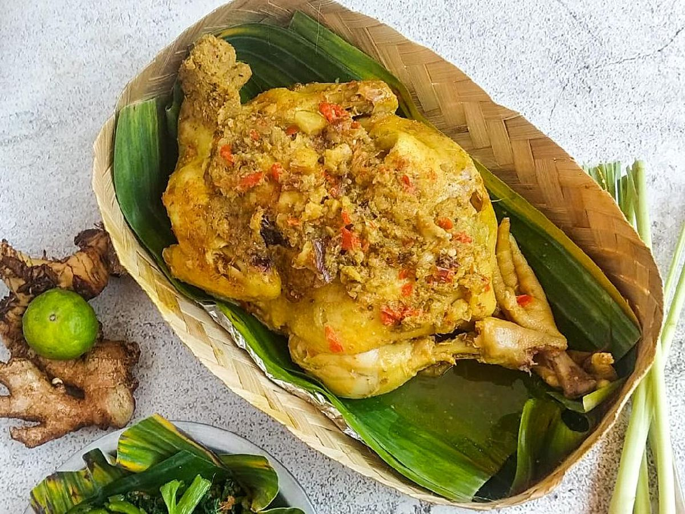
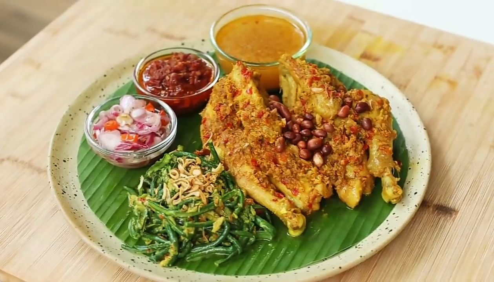

Babi Guling
Babi panggang khas Bali dengan bumbu rempah dan rasa gurih pedas.
Bahan-bahan:
- 1 ekor babi (sekitar 3-4 kg), bersihkan dan belah punggungnya
- 6 siung bawang merah
- 5 siung bawang putih
- 5 buah cabai merah besar
- 2 cm kunyit
- 2 cm jahe
- 2 batang serai, memarkan
- 5 lembar daun jeruk
- Garam dan gula merah secukupnya
- Minyak kelapa atau minyak goreng untuk olesan
Cara membuat:
- Haluskan bawang merah, bawang putih, cabai merah, kunyit, dan jahe menggunakan ulekan atau blender.
- Tumis bumbu halus bersama serai dan daun jeruk hingga harum.
- Olesi bumbu ke seluruh bagian dalam dan luar babi yang sudah dibersihkan.
- Diamkan babi selama 2-3 jam agar bumbu meresap.
- Panggang babi di atas bara api atau oven dengan suhu 180°C selama 2-3 jam sambil sesekali dioles sisa bumbu dan minyak kelapa agar kulit renyah.
- Setelah matang, potong-potong dan sajikan dengan sambal matah dan nasi putih hangat.
Lawar
Campuran sayur dan daging cincang dengan bumbu khas dan kelapa parut.
Bahan-bahan:
- 150 gram daging cincang (babi atau ayam)
- 100 gram kacang panjang, iris kecil
- 100 gram kelapa parut, sangrai
- 2 batang serai, memarkan
- 5 siung bawang merah, iris tipis
- 3 siung bawang putih, haluskan
- 5 buah cabai merah, haluskan
- 2 lembar daun jeruk
- Garam dan gula secukupnya
- Air jeruk nipis 1 sdm
Cara membuat:
- Rebus daging cincang hingga matang, tiriskan.
- Tumis bawang merah, bawang putih, cabai, serai, dan daun jeruk hingga harum.
- Campurkan tumisan dengan daging, kacang panjang, dan kelapa parut sangrai.
- Beri garam, gula, dan air jeruk nipis, aduk rata.
- Sajikan lawar sebagai pelengkap hidangan utama.
Sate Lilit
Sate khas Bali yang dibuat dari ikan cincang dan rempah, dililitkan di batang serai.
Bahan-bahan:
- 250 gram ikan tenggiri atau ikan kakap, cincang halus
- 2 siung bawang putih, haluskan
- 5 siung bawang merah, haluskan
- 3 buah cabai merah, haluskan
- 2 batang serai, ambil batangnya untuk lilitan
- 1 batang daun jeruk, iris halus
- 2 sdm kelapa parut, sangrai
- 1 sdt gula merah
- Garam dan merica secukupnya
- 2 sdm minyak kelapa
Cara membuat:
- Campur ikan cincang dengan bawang putih, bawang merah, cabai, daun jeruk, kelapa parut, gula merah, garam, merica, dan minyak kelapa hingga rata.
- Ambil sedikit adonan dan lilitkan pada batang serai sepanjang sekitar 10 cm.
- Panaskan grill atau wajan anti lengket, bakar sate sambil sesekali diolesi minyak hingga matang dan harum.
- Sajikan sate lilit dengan sambal matah atau sambal pedas Bali.

Bebek Betutu
Bebek utuh yang dimasak dengan rempah khas dan dibungkus daun pisang, matang perlahan.
Bahan-bahan:
- 1 ekor bebek, bersihkan
- 10 siung bawang merah
- 6 siung bawang putih
- 5 buah cabai merah
- 2 cm jahe
- 2 cm kunyit
- 2 batang serai, memarkan
- 5 lembar daun jeruk
- Garam dan gula merah secukupnya
- Daun pisang untuk membungkus
Cara membuat:
- Haluskan bawang merah, bawang putih, cabai, jahe, dan kunyit.
- Tumis bumbu halus bersama serai dan daun jeruk hingga harum.
- Olesi bebek dengan bumbu tumis, bungkus rapat dengan daun pisang.
- Masak bebek dengan cara dikukus atau dipanggang perlahan selama 3-4 jam sampai empuk dan bumbu meresap.
- Sajikan bebek betutu dengan sambal matah dan nasi putih hangat.
Jukut Urab
Sayur urap khas Bali dengan kelapa parut berbumbu dan segar.
Bahan-bahan:
- 200 gram kacang panjang, potong 3 cm
- 150 gram tauge, bersihkan
- 100 gram bayam atau daun singkong, rebus sebentar
- 100 gram kelapa parut, sangrai
- 4 siung bawang merah
- 3 siung bawang putih
- 5 buah cabai merah
- 1 sdm terasi bakar
- 1 sdt gula merah
- Garam secukupnya
- Air jeruk nipis 1 sdm
Cara membuat:
- Haluskan bawang merah, bawang putih, cabai, terasi, gula merah, dan garam.
- Campur bumbu halus dengan kelapa parut sangrai dan air jeruk nipis, aduk rata.
- Campurkan sayur-sayuran rebus dengan bumbu kelapa, aduk rata.
- Sajikan jukut urab sebagai pelengkap nasi dan lauk Bali lainnya.

Ayam Betutu
Ayam kampung yang dimasak dengan rempah khas Bali, dibungkus daun pisang dan dimasak perlahan hingga empuk.
Bahan-bahan:
- 1 ekor ayam kampung, bersihkan
- 10 siung bawang merah
- 6 siung bawang putih
- 5 buah cabai merah
- 2 cm kunyit
- 2 cm jahe
- 2 batang serai, memarkan
- 5 lembar daun jeruk
- Garam dan gula merah secukupnya
- Daun pisang untuk membungkus
Cara membuat:
- Haluskan bawang merah, bawang putih, cabai, kunyit, dan jahe.
- Tumis bumbu halus bersama serai dan daun jeruk hingga harum.
- Olesi ayam dengan bumbu tumis secara merata, bungkus dengan daun pisang.
- Masak ayam dengan cara dikukus atau dipanggang perlahan selama 3-4 jam hingga empuk dan bumbu meresap.
- Sajikan ayam betutu dengan nasi hangat dan sambal matah.